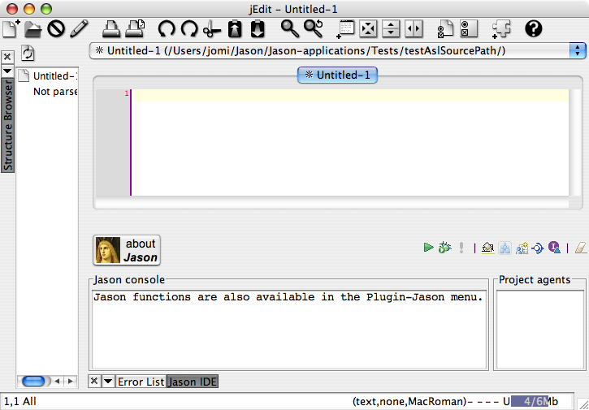
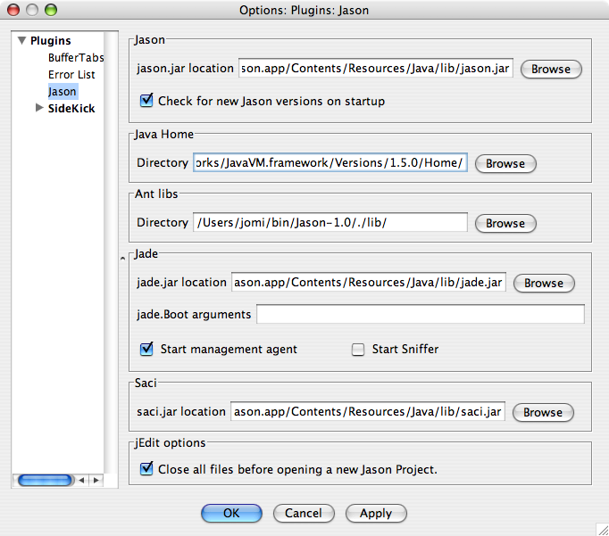
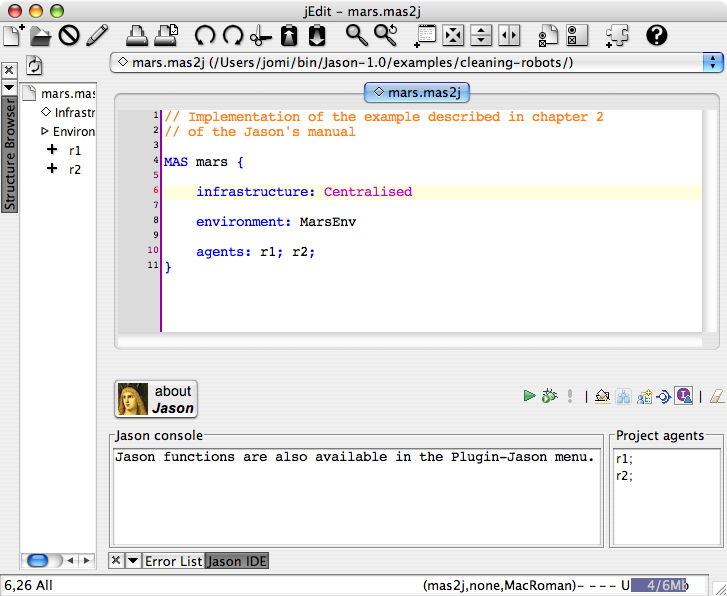
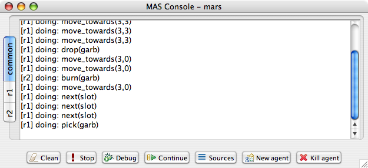
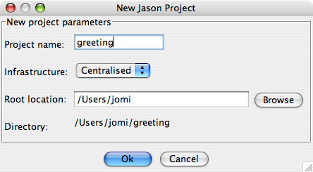
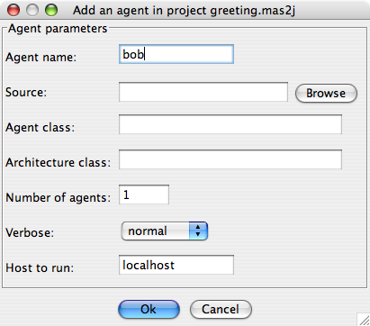
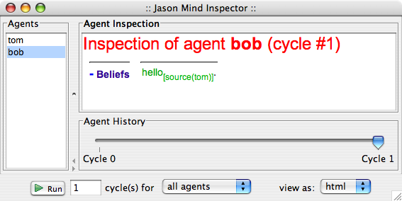
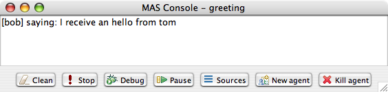
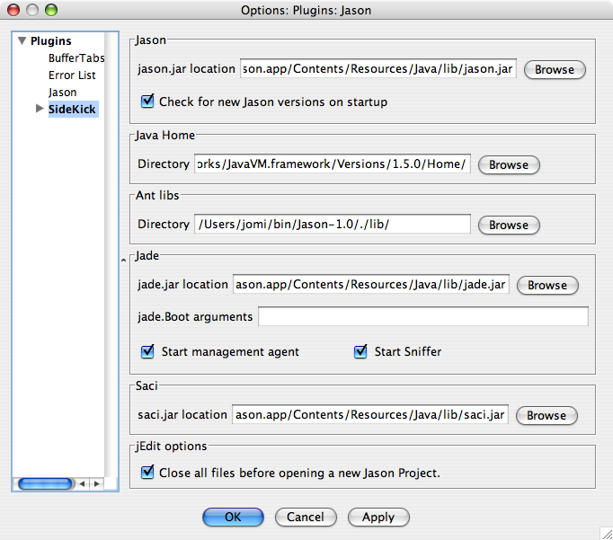
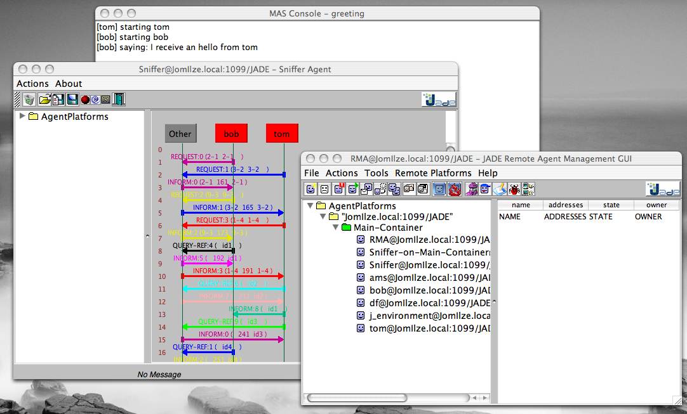

This document aims to help you install and run Jason, as well as developing a simple multi-agent system using Jason.

As you can see, Jason runs as a plugin of jEdit (a text editor developed in Java). This is useful because, although in Jason agents are programmed in a variant of AgentSpeak, in most cases you'll need to do some Java programming (e.g., if you want to create an environment where the agents are situated).

You are now ready to run a Jason multi-agent system, as we explain next.
Jason comes with many examples and demos. The examples are multi-agent system applications for simple scenarios. The demos are meant simply to show how to use some useful features of Jason. You can find a brief description of examples and demos at http://jason.sf.net.
We will now run the classic Cleaning Robots example:
This is a very simple example, showing a robot that searches the whole environment (represented as a grid) for pieces of garbage, and when one is found, it takes it to another robot, located in the centre of the grid, where there is an incinerator; the moving robot then goes back to the place where the last piece of garbage was found and continues the search from there. It is based on the original scenario that Anand Rao used when he introduced the AgentSpeak language.

The project file defines the underlying infrastructure that has been chosen for that project (Centralised, Jade, Saci, ...), the Java class that implements the environment (MarsEnv), and the agents that belong to this application (r1 searches for pieces of garbage and r2 incinerates them).

In this section we will create a new and simple example where two agents, bob and tom, exchange greeting messages.

(Don't worry about the syntax error in the project, it is caused because there are no agents in the system.)

We will now change tom's code so that it sends a ``hello'' message to bob. To send messages, an internal action called .send is used:
// Agent tom in project greeting.mas2j !start. +!start : true <- .send(bob,tell,hello).
In bob' code, we remove the start goal (and its related plan), leaving its program empty:
// Agent bob in project greeting.mas2j

Note the bob has a belief hello[source(tom)], which means that it received tom's message.
// Agent bob in project greeting.mas2j
+hello[source(A)] <- .print("I received a 'hello' from ",A).
In the plan, A is a variable that contains the name of the
sender. In AgentSpeak, as in Prolog, identifiers that start with
uppercase letters are variables.
If you run the new version, the output will be:

// Agent bob in project greeting.mas2j
+hello[source(A)]
<- .print("I received a 'hello' from ",A);
.send(A,tell,hello).
and tom does the same:
// Agent tom in project greeting.mas2j
!start.
+!start : true <- .send(bob,tell,hello).
+hello[source(A)]
<- .print("I receive an hello from ",A);
.send(A,tell,hello).
Before running the system, think what you would expect to happen. Perhaps the agents will enter a kind of greeting loop?
MAS greeting {
infrastructure: Jade
agents:
bob;
tom;
}
Also change the configuration of the Jason Plugin to start the JADE
Sniffer agent as well:

The windows created when you run the system are shown below:

In this section we will create a system where one agent will perform one action in a simulated environment.
// Agent liz in project testeenv.mas2j !start. +!start : true <- burn.
The plan's body has only the action, burn. Action here is meant to an environment action (i.e., something that changes the state of the environment), and not internal actions (the ones which starts with a dot, or have a dot anywhere in their name).
A skeleton for this class is added by Jason. Change it to be exactly as follows:
// Environment code for project testenv.mas2j
import jason.asSyntax.*;
import jason.environment.*;
import java.util.logging.*;
public class TestEnv extends jason.environment.Environment {
private Logger logger = Logger.getLogger("testenv.mas2j."+TestEnv.class.getName());
/** Called before the MAS execution with the args informed in .mas2j */
@Override
public void init(String[] args) { }
@Override
public boolean executeAction(String agName, Structure action) {
if (action.getFunctor().equals("burn")) {
addPercept(Literal.parseLiteral("fire"));
return true;
} else {
logger.info("executing: "+action+", but not implemented!");
return false;
}
}
/** Called before the end of MAS execution */
@Override
public void stop() {
super.stop();
}
}
When an agent attempts to execute an environment action, the method executeAction of this class is executed. In this implementation, if the action burn is executed, a new percept fire becomes available to all agents.
// Agent liz in project testeenv.mas2j !start. +!start : true <- burn. +fire <- run.
(The implementation of the run action is left as an exercise.)
Imagine a very simple environment formed by 4 locations (identified by 1, 2, 3, and 4) as in the figure below:
A vacuum-cleaner robot should be programmed in AgentSpeak to maintain the environment clean. The available actions for the robot are:
The following diagram, using the Prometheus notation, illustrates the interactions between the robot and the environment.

An implementation of the environment class is available here.
Some tips
You can start programming your agent by thinking about how it should react to the available perception. For instance, what it should do when it perceives "dirty"? The action "suck", of course! In AgentSpeak, we program this reaction by means of a plan as follows:
+dirty <- suck. // when dirty is perceived, do the action suck
So, an initial and very reactive agent can simply react to every perception and be programmed as shown below (replace "someaction" for the action you think is the most suitable, you might also want to remove some of the plans):
+dirty <- someaction. +clean <- someaction. +pos(1) <- someaction. +pos(2) <- someaction. +pos(3) <- someaction. +pos(4) <- someaction.
Since all perception is also included in the belief base, they can also be used to select the right plan, as in the following example:
+pos(1) : clean <- someaction. // whenever I perceive I'm in pos(1) and
// I believe that my position is clean,
// do some action.
You will soon realise that this reactive approach has some limitation in defining a good behaviour for our vacuum cleaner. In fact, this agent should be defined has having goals, in particular, a persistent goal of maintaining the house clean. The easiest way to define a persistent goal is by a recursive plan; for example, the code below implements the persistent goal (represented by p) of printing out "a":
!p. // initial goal
+!p <- .print(a); !p. // to achieve the goal p, print "a"
// and after has p as a new goal.
(some comments on possible solutions for this exercise are available here; send an email to jason.developers@gmail.com asking for the username and password required to download this file)
This document has shown a very limited range of Jason's features; the next section contains references where you can find further information.
You can find more information about Jason at: